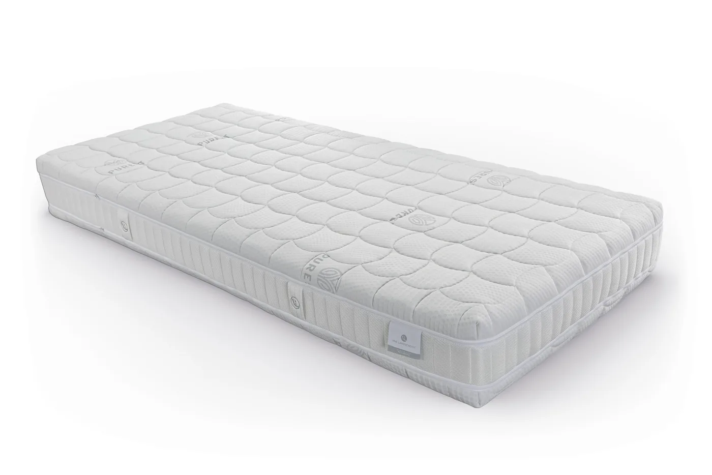
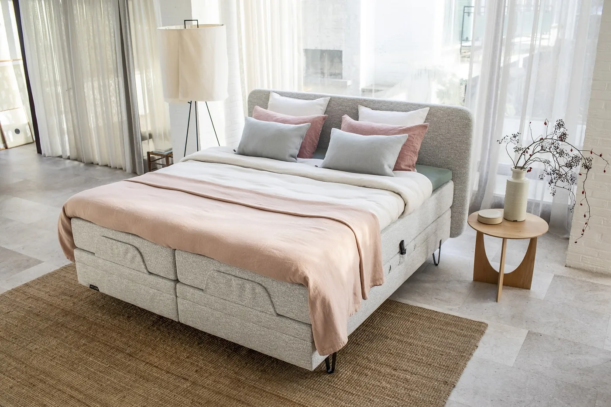
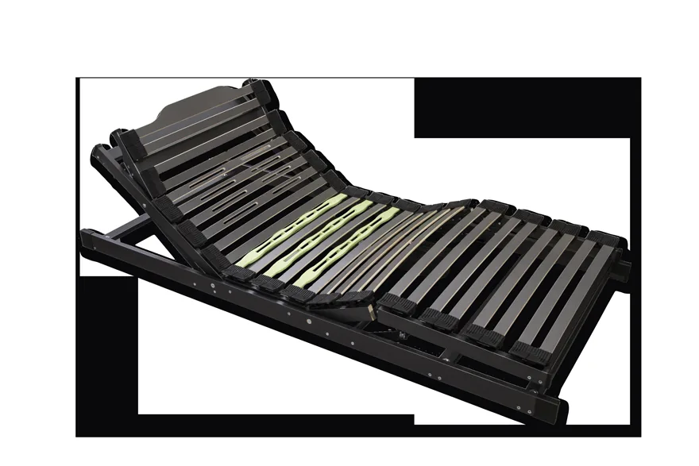
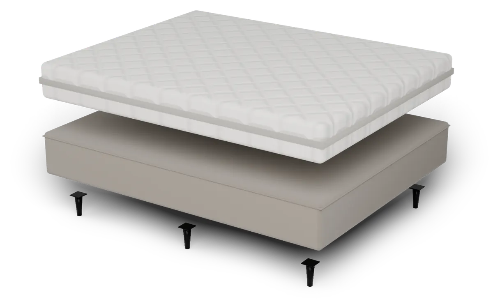

Espace literie
Literie
En Hainaut, près de Binche : boxsprings belges, fixes ou électriques, matelas et sommiers à essayer au magasin.
- Des couchages à essayer allongé
- Du lundi au samedi, avec ou sans rendez-vous
Par où commencer
Qu’est-ce qui vous amène ?
-

Le matelas
Je change de matelas
-

Le boxspring
Je veux tout le couchage
-

Le sommier
Je garde mon lit, je change le sommier
À l’intérieur
Ce que vous sentirez, couche après couche.

Le matelas
-
Matelassée, elle s’enlève et se lave.
En détail
Une bande d’aération court sur le côté.
-
C’est elle que vous sentez en vous allongeant.
En détail
Quelques centimètres posés sur les ressorts : mousse à froid, latex ou mousse à gel.
-
Chaque ressort réagit séparément : l’épaule n’est pas portée comme le bassin.
En détail
Des ressorts ensachés, chacun dans sa poche, répartis en sept zones.
-
Le même matelas ne donne pas la même sensation sur des lattes et sur une base à ressorts.

Le boxspring
-
Il se choisit allongé : c’est lui qui fait la sensation du lit.
En détail
À ressorts ensachés ou en mousse, avec plusieurs accueils.
-
Elle n’est pas qu’un support : fixe ou électrique, c’est la première question que nous vous poserons.
En détail
Chez Axelsson, elle existe en plusieurs hauteurs, avec deux types de ressorts.
-
Ils règlent la hauteur du couchage et l’allure de la chambre.
En détail
Six modèles en métal, de 12 à 20 cm.
Avant de venir
Préparez votre essai en quatre questions.
Vos réponses forment un résumé à montrer au magasin. Rien n’est envoyé ni enregistré.

Conseils
L’un lit, l’autre dort.
L’un aime un lit ferme, l’autre non. Nos conseils pour bien choisir, seul ou à deux.
Voir les conseils →Au magasin
Trois fabricants belges.
Les modèles exposés se déclinent en d’autres tailles, tissus, coloris, têtes de lit et pieds.
-
Velda
Fabriqués en Belgique. Au magasin, découvrez notamment le Fly et l’Imagine, en version fixe ou électrique, dans les configurations proposées par le fabricant.
-
Van Landschoot
Les boxsprings Axelsson, fabriqués en Belgique.
-
Polypreen
Matelas, sommiers à lattes et boxsprings fabriqués à Lommel, en Belgique.
Velda
Quelques modèles Velda.
Tissus, têtes de lit, pieds et fonctions : composez votre couchage selon les options disponibles. Les modèles exposés se voient et s’essaient au magasin.

Un boxspring aux lignes nettes, pieds métal. 
Le Fly : une poche dans la tête de lit, pour le livre du soir. 
Tissu chiné et tête de lit arrondie.


Autour du lit
Cadre de lit, chevets, armoires.
Le cadre et la tête de lit se choisissent avec les chevets et les rangements, dans des finitions qui s’accordent : ils ont leur page.
Voir la chambreVos questions
Avant de choisir.
Peut-on essayer un matelas ou un boxspring avant de l’acheter ?
Oui. Plusieurs couchages sont installés au magasin : allongez-vous, sans rendez-vous, et comparez.
Livrez-vous et installez-vous la literie ?
Oui, la livraison et l’installation sont assurées par nos soins.
Venez essayer nos matelas et boxsprings.
Allongez-vous dans votre position habituelle : c’est le test le plus fiable. Notre magasin de literie, à Leval-Trahegnies (Binche), vous accueille sans rendez-vous, à quelques minutes d’Anderlues, à un quart d’heure de La Louvière et moins de trente minutes de Mons. Parking facile d’accès.
- Lundi
- 13h30 – 18h30
- Mardi au samedi
- 10h30 – 18h30
- Dimanche
- Fermé
- Téléphone
- 064 46 07 72
- Livraison
- Par nos soins, dans le Hainaut (Binche, La Louvière, Mons, Charleroi…) et la province de Namur
Ailleurs en Belgique, dont Bruxelles : sur demande.